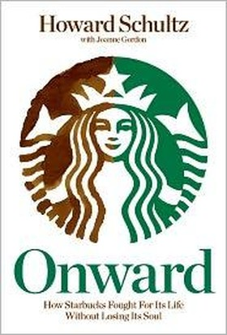

Library › Business & Startups
Onward: How Starbucks Fought for Its Life without Losing Its Soul — Summary & Key Lessons

He came back as CEO, closed 7,100 stores for one afternoon to retrain baristas, and spent $6 million teaching people to pour espresso.
📖 OPEN THE FULL INTERACTIVE BREAKDOWN →🌐 Read it in Hindi, Hinglish, Gujarati, Tamil & 22 more languages — free, with audio.
💡 The Big Idea
When Schultz returned as CEO in January 2008, Starbucks was growing but rotting: automated espresso machines had silenced the theater, breakfast sandwiches made stores smell like kitchens, expansion had diluted the 'third place' feeling, and the financial crisis crushed a premium habit. His turnaround is a masterclass in founder re-diagnosis: a public admission that the company had drifted, the dramatic closure of 7,100 US stores for one afternoon to retrain baristas on espresso (a deliberate symbol), menu simplification, slowed expansion, Via instant coffee (launched against mockery, became a hit), and heavy investment in health benefits and values during layoffs. The book's twin themes: a brand is an experience that can silently erode while the P&L looks fine, and the fixes that save a soul-losing company are operational, not cosmetic.
🧠 The 8 Key Lessons
Lesson 1: KPIs Can Rise While the Brand Rots
The Drift Nobody Measured
Starbucks' numbers stayed healthy while the experience decayed: automation cut labor but also cut theater, expansion cannibalized stores, and efficiency decisions (made for good reasons) silently traded the brand's soul for margin. The diagnostic lesson: metrics measure yesterday's strategy; founders need an experience audit that walks the customer's shoes independent of what the dashboard says.
📖 Example: Schultz lists the unglamorous rot: espresso machines that hid the barista, syrup bottles hiding the brand's coffee identity, sandwich smells overwhelming coffee aroma, stores opened into each other's footprints. Read the full example →
⚡ Do this: Mystery-shop your own experience this week as a first-time customer, alone and unhurried. List everything that would disappoint the founder who built the first version. Fix the top three, regardless of their P&L impact.
Lesson 2: Make One Symbolic Move Too Expensive to Be Fake
The 7,100-Store Closure
Closing every US store for one afternoon (about $6 million in lost sales) to retrain 135,000 baristas on espresso was strategically unnecessary and symbolically total: it announced internally and externally that quality outranks a day of revenue. The principle: turnarounds need one costly, visible act that proves the new priority is real, because employees discount words but price sacrifice.
📖 Example: Baristas re-poured espresso, re-learned timing and crema; customers read the closure as seriousness; competitors realized Starbucks was fighting for craft, not just share. Read the full example →
⚡ Do this: Design one costly, visible action this quarter that proves your stated priority is real (a public retraining, a costly recall fix, killing a popular but off-brand product). If it wouldn't hurt, it won't convince.
Lesson 3: Confess the Drift Publicly
The Memo That Leaked (and the One That Didn't)
Schultz's internal memo admitting Starbucks had 'commoditized' the experience leaked in 2007 and caused a stir; as CEO he embraced the candor, telling the whole company and market the truth. The lesson: founders who confess drift honestly get a mandate to fix it; those who spin it get a turnaround nobody believes in. Admission is the entry fee to transformation.
📖 Example: The leaked memo became the turnaround's founding document; investors flinched, employees exhaled, and the brand's honesty about itself became part of the recovery story. Read the full example →
⚡ Do this: Write the honest internal memo about your company's biggest drift today. Share it with your leadership team this week, worded exactly as you'd defend it publicly.
Lesson 4: Cut Growth Before You Cut Quality
The 600 Closures
The turnaround closed 600 underperforming stores and slowed expansion, prioritizing experience density over footprint. The counterintuitive courage: shrinking is growth when expansion is diluting the core; same-store health is the only compounding that matters in experience businesses.
📖 Example: Locations cannibalizing each other's soul (and sales) were closed despite real-estate logic defending them, and the surviving stores' economics recovered as the experience recovered. Read the full example →
⚡ Do this: Identify the expansion or product line that is diluting your core experience. Model its closure this month, even if the headline revenue shrinks; measure what happens to the core in 90 days.
Lesson 5: Launch Against the Mockery
Via Instant Coffee
Instant coffee was Starbucks' taboo (heresy against fresh craft), so competitors laughed when Via launched in 2009. It became a hundred-million-dollar business because the insight was real: Starbucks customers have instant moments (camping, office, travel) they currently lose to competitors. The lesson: your brand's most mocked extension is often its biggest new market, IF it protects the core's quality bar and reaches customers where the core cannot go.
📖 Example: Blind tastings (Via beating rivals) gave employees the confidence to sell the heresy; the launch turned a brand weakness ('you're only for coffee shops') into a category. Read the full example →
⚡ Do this: Name the use-case your brand refuses to serve out of purity. Test a premium version of it: your best customers are probably already improvising it badly.
Lesson 6: Values Are an Operating Cost in a Crisis
Healthcare Through the Fire
Starbucks kept health benefits and stock programs (rare in retail) while laying off thousands, arguing that breaking the values covenant during the crisis would outlast the crisis in employee and customer memory. Costs of values are real; costs of abandoning them are larger and arrive later. The discipline: decide in advance which costs you will NOT cut, write them down, and honor them when the spreadsheet begs.
📖 Example: Barista retention and the brand's trust with staff through brutal layoffs (with honest communication) kept service quality from collapsing alongside sales. Read the full example →
⚡ Do this: Write your three never-cut costs (the covenant costs) on one page with your leadership team. Post them where budget cuts are decided.
Lesson 7: The Founder's Return Works Only with Operational Humility
Back to the Espresso Bar
Schultz returned not to keynote but to diagnose specifics (milk steaming, blend choices, store design) alongside operators. Founder prestige without operational humility produces nostalgia turnarounds; the founder's edge is caring enough about details nobody else will fight for. The discipline: return-to-founder moments work when the founder returns to the work, not the podium.
📖 Example: The book is dense with operational specifics (espresso shots expiring, milk standards, store layouts), the opposite of the typical founder memoir's altitude, and that detail obsession IS the method. Read the full example →
⚡ Do this: Pick the lowest-status detail in your product (the default text, the hold music, the packaging seam) and fix it personally this month. Prestige is spent; details compound.
Lesson 8: A Brand Is a Promise Rehearsed Daily
The Third Place, Rebuilt
The turnaround's north star was restoring the 'third place' (between home and work) feeling: aroma, seating, theater, familiarity. Every fix traced to that promise, every cut was tested against it. The meta-lesson: brands decay when the promise becomes a slogan; they recover when the promise becomes a daily rehearsal with standards, audits and the willingness to close for an afternoon.
📖 Example: New store designs brought back aroma paths and coffee-theater; the 'third place' phrase returned from marketing folklore to a design brief each architect received. Read the full example →
⚡ Do this: Write your brand's original promise in one sentence. Audit yesterday's operations against it in three specific, observable ways, and make one of them a weekly ritual.
✅ 5-Step Action Plan
- Mystery-shop your own experience and fix the top three drift points this month.
- Plan one costly, visible act that proves your priority is real this quarter.
- Share one honest drift memo with your leadership team this week.
- Model the closure of whatever is diluting your core; measure the core's response.
- Write your never-cut covenant costs on one page and post them at budget time.
⚠️ When This Doesn't Work
This is the founder's account of his own turnaround: Schultz's framing of layoffs, union-era tensions (which postdate the book but color it in hindsight) and competitor moves is naturally self-flattering. The financial-crisis ending (sales recovering) was real but the harder years that followed are beyond its scope. Read it as the most detailed founder turnaround diary in retail, and pair it with the linked case study for a brand that drifted the same way and did not come back.
💀 The Graveyard Proves It
🥤 New Coke — They Fixed the Thing That Wasn't Broken. Burn: 79 days of chaos, permanent lesson. Read the full case study →
💬 Best Quotes from Onward: How Starbucks Fought for Its Life without Losing Its Soul
- “Growth hid the decay. The P&L was fine, so nobody asked about the espresso.”
- “The worst thing a founder can do is watch the company drift politely into being ordinary.”
- “We closed every store for an afternoon to say out loud: the coffee comes first.”
Interactive version: mark lessons as read, listen in your language, share quote cards.